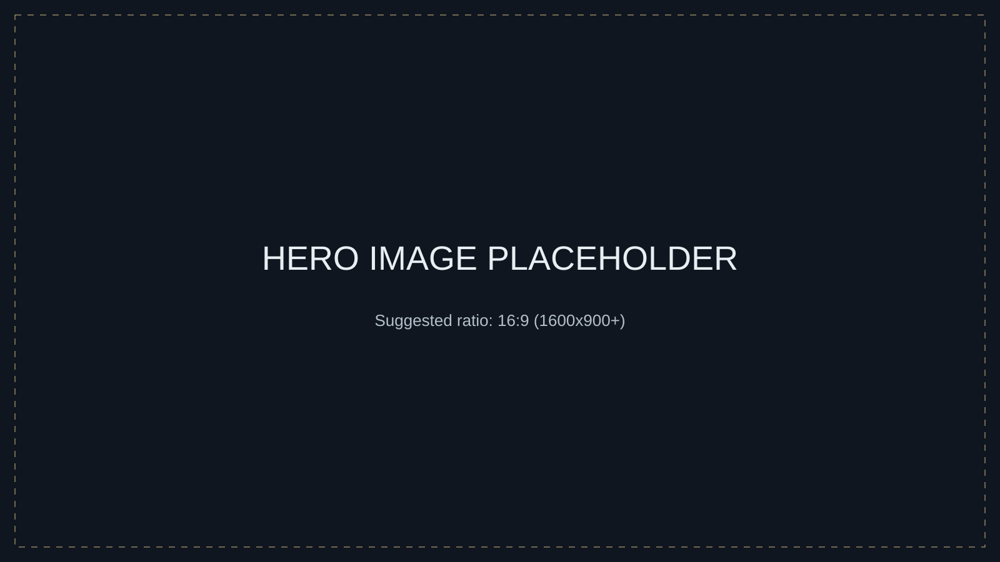

Hunza, Skardu, Fairy Meadows
Curated mountain routes with altitude-sensitive pacing and terrain awareness.
UK Curated / Pakistan Delivered
Designed in the UK. Delivered by those who call these mountains home. Our role is not to sell discount travel—it is to create serious, elegant access into Pakistan’s wilderness and living culture.
Why us
Every route is built for thoughtful UK travellers and delivered with route-level local judgement by our Hunza expedition partner, from transport rhythm and weather adaptation to cultural introductions and safety awareness.
Curated mountain routes with altitude-sensitive pacing and terrain awareness.
Food culture, shrines, old city histories and living traditions approached respectfully.
Daily local coordination and real-time judgement when conditions shift.
Flagship Collection
Media Placeholders
Until final media is prepared, these placeholders preserve layout structure for hero imagery, video/promo sections, and logo usage.
